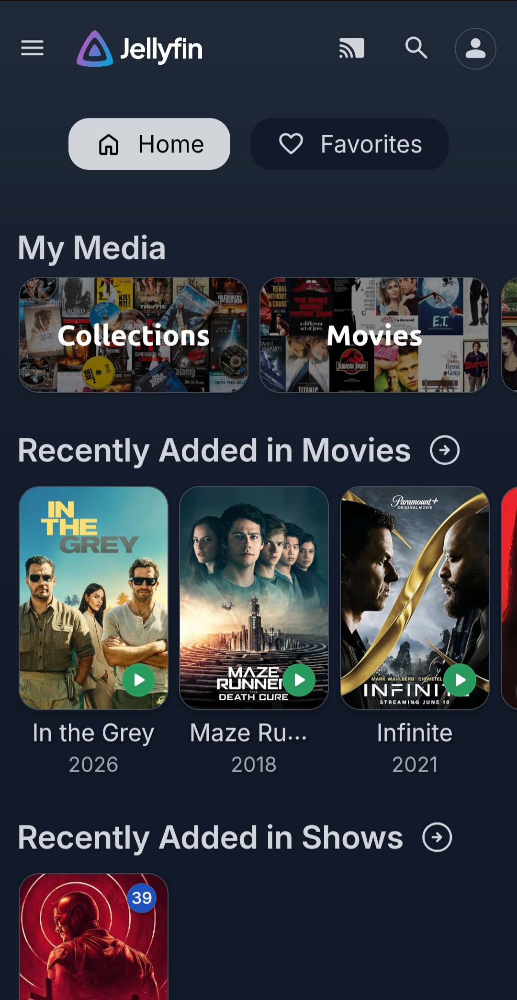
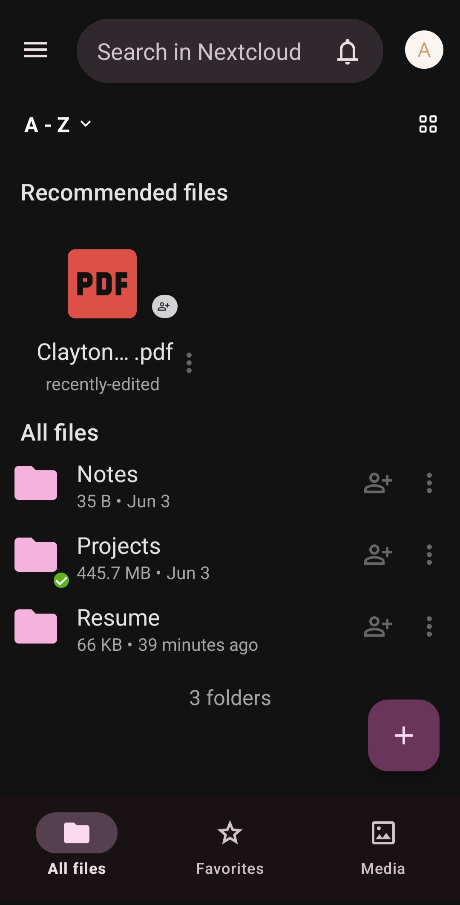
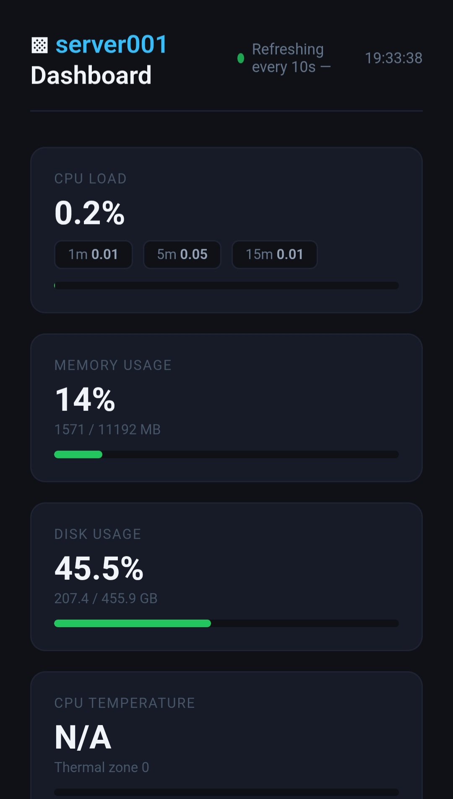
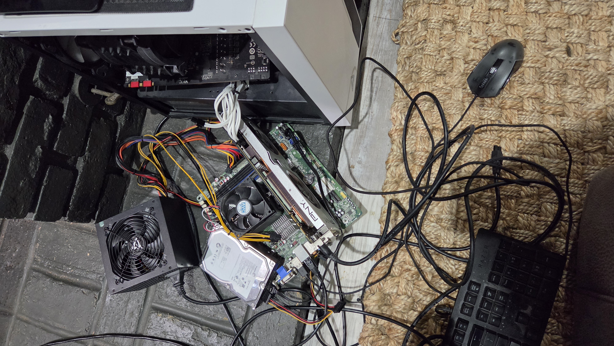
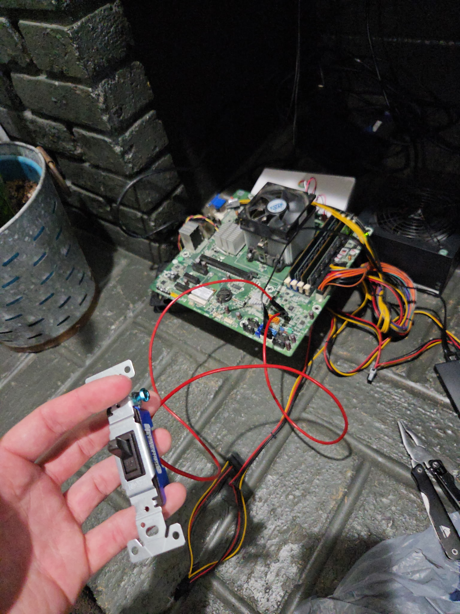

This project is a home media server built in Ubuntu Linux that holds files, pictures, movies, and websites for me to use. I used old computer parts Ubuntu Server OS as a base, Jellyfin for movies, NextCloud for files, NGINX for websites, and Tailscale for a VPN. Each program is run on a different port and through the Tailscale VPN IP address of the server I can access all programs from any device that is connected to the VPN Also





(left) had to use GPU power cable from main PC for setup to display because there are no integrated graphics for the cpu I used
(right) had to wire up light switch for a power button for ease of use when I left for college